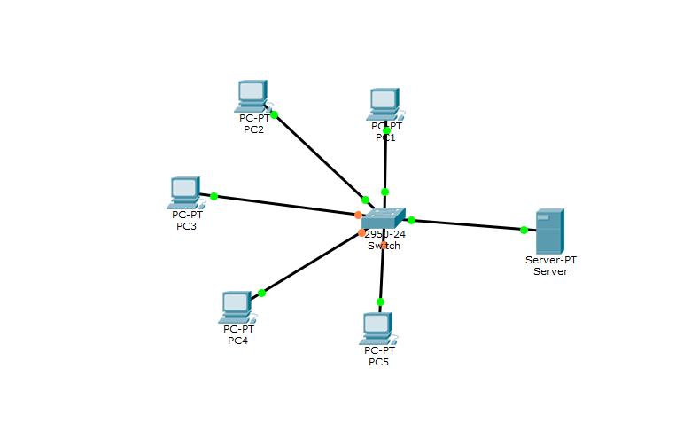

Egy hálózati topológia a számítógép-hálózatok esetén a hálózathoz tartozó csomópontok közötti kapcsolatokat határozza meg.
Jelentősebb fajtái:
Csillagtopológia: csökkenti a hálózati meghibásodás esélyét azzal, hogy minden csomópont kapcsolatban áll a központi csomóponttal.
Fatopológia: látszólag hierarchikusan rendezett csillag topológiák gyűjteménye. Minden fatopológiában létezhetnek egyedülálló, perifériális csomópontok, ezek az úgynevezett "levelek". A csillag topológiától eltérően, ahol az üzenetek közvetítését a központi csomópont végzi, a fa topológiában ez a funkció nem központosított, az ágaknál lévő csomópontok valósítanak meg hasonló funkciót.
ide a fatopológia képet tesomszkLánctopológia: A legegyszerűbb topológia a lánctopológia, ahol a hálózati csomópontok között egy kapcsolat van csak. Ez a topológia egyszerű, viszont a hálózat egy kapcsolat kiesése miatt két önálló "szigetre" esik szét.
ide a lánc topológia képet tesómszk és akkor nem hívom a harmadosztályt